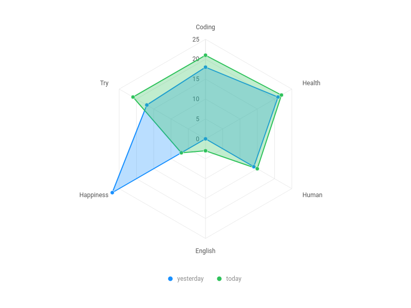

2 Thank
- Thank your voice. 真的帅的不行
- I feel peaceful today. Write some code about
getChartand feel good from doing it. Listen to music. Write blog. Take class. And follow my heart to play and study. I will try to do something about main task and prepare something for future work. - 
2 Note
- nodejs get commandline parameter:
process.argv.splice(2) - nodejs read/write file: fs.readFile(path, function(err, data)), fs.writeFile(path, data, function(err))
- hexo set skip_render: edit
_config.ymlfile, and then runhexo clean. Otherwise it will not take effect. use script to download file
1234var link = document.createElement('a')link.download = 'image-name.jpeg'link.href = dataUrl;link.click();awesome-selfhosted: This is a list of Free Software network srevices and web applications which can be hosted locally. Selfhosting is the process of locally hosting and managing applications instead of renting from SaaS providers.- 关于github pages绑定域名的方法： 1.需要在域名运营商处设置CNAME解析到github pages链接。2.需要在对应repo的settings里面设置custom domain.
2 Copy
DOM to Image: dom-to-image is a library which can turn arbitrary DOM node into a vector (SVG) or raster (PNG or JPEG) image, written in JavaScript. It’s based on domvas by Paul Bakaus and has been compeletely rewritten, with some bugs fixed and some new features (like web font and image support) added.- All the top level functions accept DOM node and rendering options, and return promises, which are fulfilled with corresponding data URLs.
Get a PNG image base64-encoded data URL and display right away:
123456789var node = document.getElementById('my-node');domtoimage.toPng(node).then(function (dataUrl) {var img = new Image();img.src = dataUrl;document.body.appendChild(img);}).catch(function (error) {console.error('oops, something went wrong!', error)});Get a PNG image blob and download it (using FileSaver, for example):
123domtoimage.toBlob(document.getElementById('my-node')).then(function (blob) {window.saveAs(blob, 'my-node.png');});Save and download a compressed JPEG image:
1234567domtoimage.toJpeg(document.getElementById('my-node'), {quality: 0.95}).then(function (dataUrl) {var link = document.createElement('a');link.download = 'my-image-name.jpeg';link.href = dataUrl;link.click();});Get an SVG data URL, but filter out all the elements:
12345678function filter (node) {return (node.tagName !== 'i');}domtoimage.toSvg(document.getElementById('my-node'), {filter: filter}).then(function (dataUrl) {/* do something */});Get the raw pixel data as a Unit8Array with every 4 array elements representing the RGBA data of a pixel:
1234567891011var node = document.getElementById('my-node');domtoimage.toPixelData(node).then(function (pixels) {for (var y = 0; y < node.scrollHeight; ++y) {for (var x = 0; x < node.scrollWidth; ++x) {pixelAtXYOffset = (4 * y * node.scrollHeight) + (4 * x);pixelAtXY = pixels.slice(pixelAtXYOffset, pixelAtXYOffset + 4);}}});The show must gon on
- crave v. 渴望；恳求 kudos n. 光荣，荣誉 vererans n. 老兵 intimidating adj. 吓人的，令人胆怯的 to a degree 在某种程度上
- 决策时必须考虑其他人的行动，决策者之间的相互依存正是博弈的实质。
- 人总是尝试去理解解释一些东西，这是天性。但是如果不去想的话，会节省很多精力。